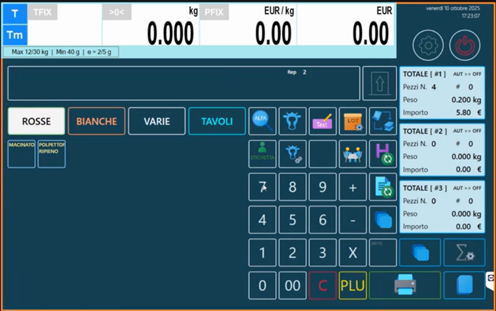
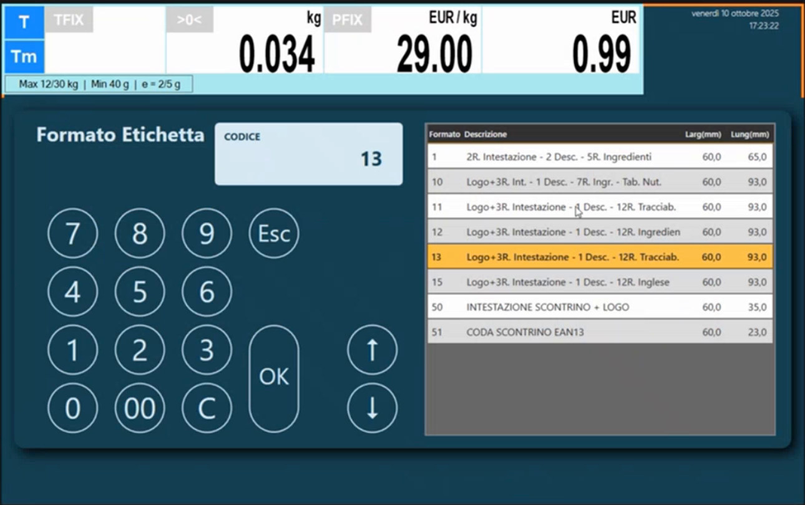
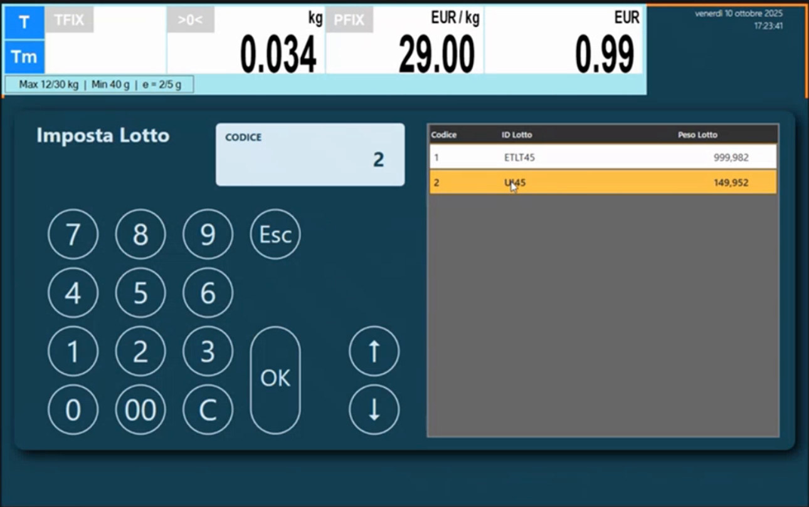
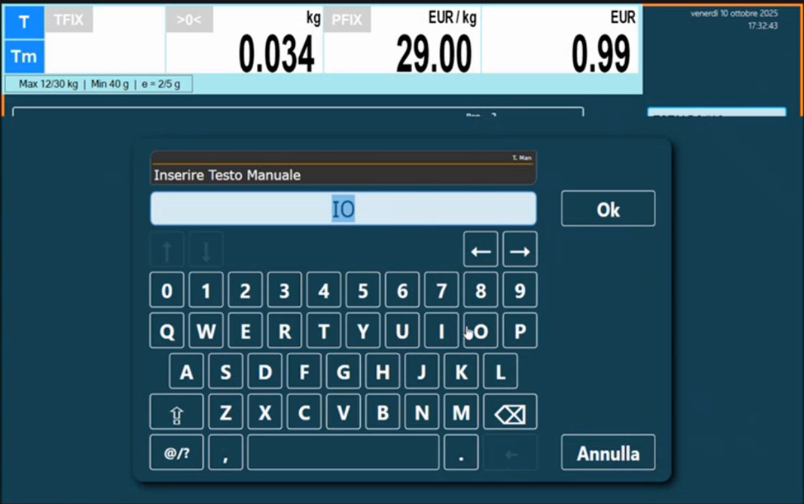
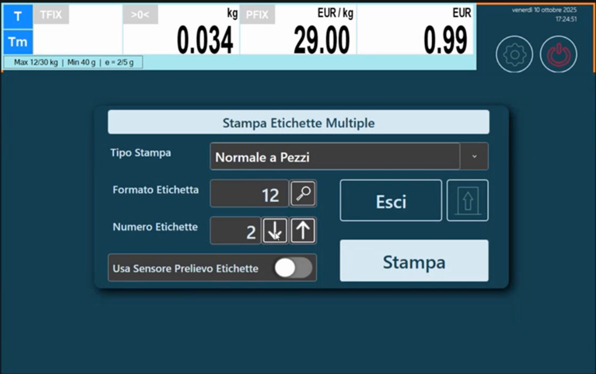
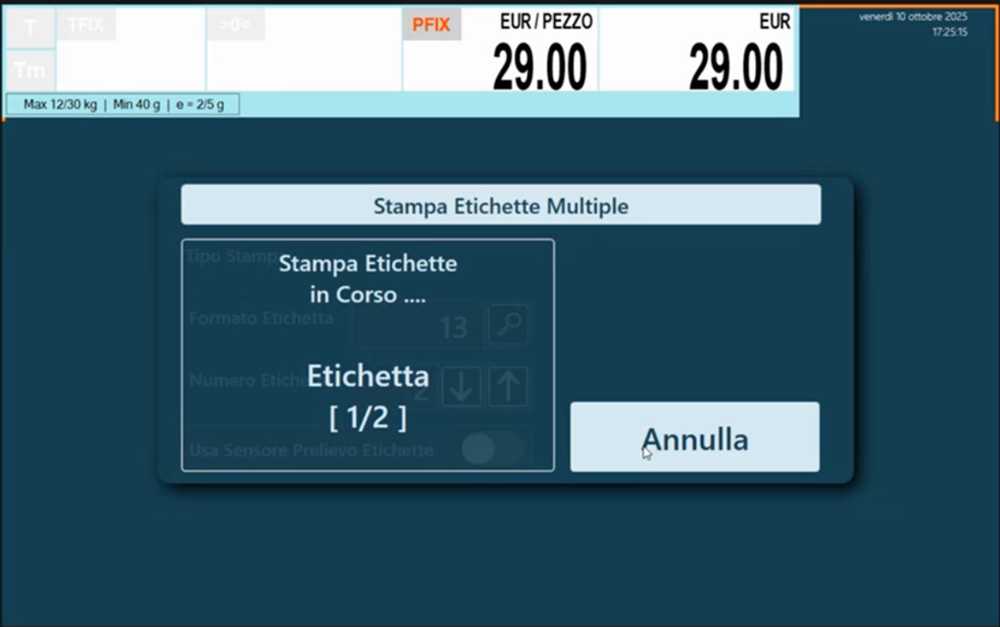

Etichettatura in vendita: etichette, lotti e totali
Target: tecnico installatore / rivenditore.
Obiettivo
Usare la modalità Etichetta della bilancia: scegliere il modo di acquisizione, cambiare formato e intestazione al volo, selezionare il lotto di tracciabilità, inserire lotto di produzione e testo manuale, stampare più etichette e usare i totali.
Aggiornamento necessario
L'etichettatura evoluta è disponibile aggiornando la bilancia all'ultima versione: le prime installazioni Icona sono nate senza questa infrastruttura. Se il cliente ha una bilancia vecchia, l'aggiornamento abilita tutte le funzioni descritte qui.
Prerequisiti
- La modalità e le opzioni di etichetta sono impostate in Configurazione Operativa (sezione Opzioni Etichetta).
- Formati etichetta, intestazioni, testi e (se serve) tabella nutrizionale e tracciabilità sono stati preparati: Formati Etichetta, Tracciabilità e lotti.
Come si passa all'etichettatura
Nella tastiera Retail si può creare un tasto personalizzato con la funzione che commuta la bilancia tra modalità Multipesata e modalità Etichettatura: lo stesso tasto riporta in Multipesata. La funzione si assegna in Configurazione Tastiera (tipo tasto Multi Pesata <=> Etichettatrice).

In etichettatura la schermata mostra, a destra, i blocchi TOTALE [#1], [#2] e [#3] con Pezzi N., Peso e Importo: sono i tre livelli di totale (vedi sotto).
Modo di acquisizione
Il campo Modo Acquisizione Transazione (Opzioni Etichetta) decide quando la bilancia stampa:
| Valore | Comportamento |
|---|---|
| AUT | Stampa scontrini ed etichette non appena si fa la pesata e si tocca l'articolo |
| MAN | Stampa solo dopo la conferma con il tasto di stampa |
| PRECONF | Modalità preconfezionato |
Procedura in vendita
1. Scegli articolo e peso
Seleziona l'articolo (nell'esempio un polpettone ripieno) e appoggia il peso sulla bilancia.
2. Cambia formato etichetta o intestazione
Sempre con i tasti funzione puoi cambiare il formato etichetta al volo: per esempio per scegliere un formato con la tabella nutrizionale se non è già agganciato all'articolo, oppure cambiare l'intestazione. Se nella scheda dell'articolo il formato è 0, vale il formato di default o quello scelto qui.

Il selettore mostra l'elenco dei formati del banco (Formato, Descrizione, Larg, Lung): per esempio 13 Logo+3R. Intestazione - 1 Desc. - 12R. Tracciab. oppure 15 Logo+3R. Intestazione - 1 Desc. - 12R. Inglese.
3. Seleziona il lotto tracciabile
Se l'articolo ha la tracciabilità attiva, scegli il lotto tracciabile: la bilancia propone l'elenco Imposta Lotto con i lotti disponibili e il peso residuo.

4. Lotto di produzione e testo aggiuntivo (facoltativi)
Sulla stessa etichetta si possono impostare altri dati:
-
Lotto di produzione personalizzato. Serve a identificare un prodotto che lavori tu (per esempio una torta). È un codice alfanumerico da inserire a mano, che puoi cambiare ogni volta o tenere uguale per tutto il giorno. La bilancia può anche stampare in automatico un lotto giuliano: un numero progressivo riferito all'anno di emissione delle etichette, per etichettare con lotti di produzione automatici.
-
Testo manuale (testo aggiuntivo). Un testo libero che non c'entra con il lotto di produzione: per esempio il nome del cliente quando si etichetta per conto terzi.

Tutti questi dati vengono stampati sull'etichetta. Perché compaiano, il formato etichetta deve avere i relativi campi (Lotto Produzione, testo manuale: vedi Formati Etichetta).
5. Stampa
Conferma con il tasto di stampa (in MAN) o semplicemente seleziona l'articolo (in AUT). Contemporaneamente il totale #1 si aggiorna con l'etichetta registrata: serve per la somma delle etichette.
Stampa di più etichette
Un altro tasto funzione permette di stampare più etichette (finestra Stampa Etichette Multiple). Campi: Tipo Stampa, Formato Etichetta, Numero Etichette (con le frecce), Usa Sensore Prelievo Etichette (interruttore).
| Tipo Stampa | Cosa stampa |
|---|---|
| Normale a Pezzi | Etichette per articoli a pezzo: stampare molte etichette significa stampare solo a pezzi. Si sceglie il formato (per esempio uno con soli ingredienti) e il numero di etichette, anche 10 |
| Senza Dati Metrici | Stampa il layout dell'etichetta senza i dati metrologici (peso, prezzo...): restano scadenza, pezzo e le altre informazioni collegate |


Usa Sensore Prelievo Etichette: attivalo quando sulla bilancia c'è fisicamente un rotolo di etichette e vuoi che la bilancia gestisca il sensore di prelievo; altrimenti basta premere Stampa.
Totali a più livelli
In etichettatura evoluta la bilancia gestisce tre livelli di totale, utili a chi fa confezionamenti: per esempio si confeziona una scatola, poi un pallet, e si ottiene un'etichetta totale con il riepilogo. I formati dei totali si assegnano:
- per articolo nella scheda Stampa (Articoli PLU: Formato Etichetta Totale (1), (2), (3));
- in generale in Totali Etichette (Configurazione Operativa).
Verifica
L'etichetta stampata riporta intestazione, descrizione, ingredienti, eventuale tracciabilità con i dati del lotto, lotto di produzione, testo manuale e tabella nutrizionale, secondo il formato scelto. Il peso giacenza del lotto è diminuito.
Errori comuni
| Problema | Causa probabile | Rimedio |
|---|---|---|
| La bilancia non stampa dopo la pesata | Modo Acquisizione Transazione su MAN | Premi il tasto di stampa o passa a AUT |
| L'etichetta non riporta il lotto | Il formato non contiene i campi del lotto, o la tracciabilità non è attiva | Scegli un formato "Tracciab." e controlla articolo e banco |
| Il lotto di produzione o il testo manuale non compaiono | Il formato non ha i campi corrispondenti | Aggiungi i campi nell'editor (Formati Etichetta) |
| Si stampa sempre lo stesso formato | Formato impostato in modo fisso nella scheda dell'articolo | Imposta 0 nel formato del PLU per lasciar decidere alla bilancia |
Prossimo passo
Come si costruisce e si personalizza un formato etichetta: Formati Etichetta.